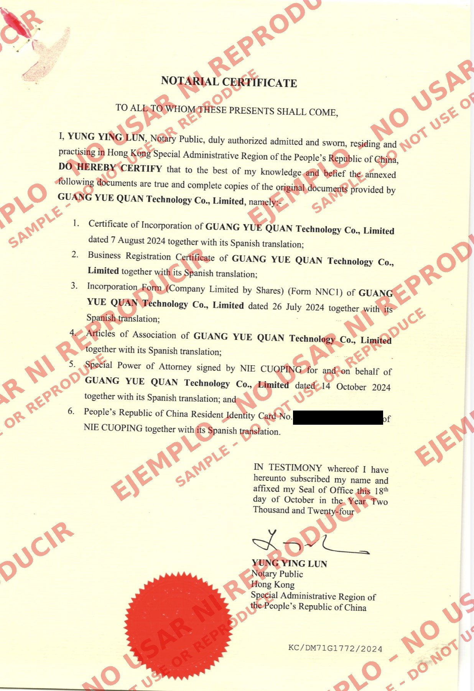

TO ALL TO WHOM THESE PRESENTS SHALL COME
I, [NOTARY NAME], Notary Public, duly authorized, admitted and sworn, residing and practising in [JURISDICTION, e.g. Hong Kong Special Administrative Region of the People’s Republic of China], DO HEREBY CERTIFY that to the best of my knowledge and belief the annexed following documents are true and complete copies of the original documents provided by [COMPANY NAME], namely:
1. Certificate of Change of Name of the Company in respect of the change of company name from [FORMER COMPANY NAME] to [COMPANY NAME] dated [DATE] together with its Spanish translation;
2. Business Registration Certificate of [COMPANY NAME] together with its Spanish translation;
3. Incorporation Form (Company Limited by Shares) (Form NC1) of [COMPANY NAME AT INCORPORATION] dated [DATE] together with its Spanish translation;
4. Notice of Change of Company Name (Form NNC2) of [FORMER COMPANY NAME] dated [DATE] together with its Spanish translation;
5. Notice of Change of Company Name (Form NNC2) of [COMPANY NAME] dated [DATE] together with its Spanish translation;
6. General Power of Attorney of [COMPANY NAME] dated [DATE] together with its Spanish translation; and
7. [OPTIONAL] [IDENTITY DOCUMENT TYPE, e.g. People’s Republic of China Resident Identity Card / Passport] No. [ID NUMBER] of [SIGNER NAME] together with its Spanish translation; and
8. [OTHER DOCUMENT, IF ANY] together with its Spanish translation.
IN TESTIMONY whereof I have hereunto subscribed my name and affixed my Seal of Office this [DAY] day of [MONTH] in the Year [YEAR].
______________________________
[NOTARY NAME]
Notary Public
[JURISDICTION]
[SEAL OF NOTARY]
Ref. No. [REF]
A TODOS A QUIENES EL PRESENTE CONCIERNA
Yo, [NOMBRE DEL NOTARIO], Notario Público, debidamente autorizado, admitido y juramentado, con residencia y ejercicio en [JURISDICCIÓN], POR MEDIO DEL PRESENTE CERTIFICO que, según mi leal saber y entender, los documentos anexos que a continuación se enumeran son copias fieles y completas de los documentos originales proporcionados por [NOMBRE DE LA EMPRESA], a saber:
1. Certificado de Cambio de Denominación de la Sociedad, respecto del cambio de denominación de [DENOMINACIÓN ANTERIOR] a [NOMBRE DE LA EMPRESA], de fecha [FECHA], junto con su traducción al español;
2. Certificado de Registro Comercial de [NOMBRE DE LA EMPRESA], junto con su traducción al español;
3. Formulario de Constitución (Sociedad Limitada por Acciones) (Formulario NC1) de [DENOMINACIÓN AL CONSTITUIRSE], de fecha [FECHA], junto con su traducción al español;
4. Aviso de Cambio de Denominación (Formulario NNC2) de [DENOMINACIÓN ANTERIOR], de fecha [FECHA], junto con su traducción al español;
5. Aviso de Cambio de Denominación (Formulario NNC2) de [NOMBRE DE LA EMPRESA], de fecha [FECHA], junto con su traducción al español;
6. Poder General de [NOMBRE DE LA EMPRESA], de fecha [FECHA], junto con su traducción al español; y
7. [OPCIONAL] [TIPO DE DOCUMENTO DE IDENTIDAD, p. ej. Tarjeta de Identidad de Residente de la República Popular China / Pasaporte] No. [NÚMERO] de [NOMBRE DEL FIRMANTE], junto con su traducción al español; y
8. [OTRO DOCUMENTO, EN SU CASO], junto con su traducción al español.
EN TESTIMONIO de lo cual suscribo mi nombre y estampo mi Sello Oficial a los [DÍA] días del mes de [MES] del año [AÑO].
______________________________
[NOMBRE DEL NOTARIO]
Notario Público
[JURISDICCIÓN]
[SELLO DEL NOTARIO]
Ref. No. [REFERENCIA]

Documento de ejemplo únicamente. Prohibido usarlo o reproducirlo.
[Nota: Modelo de referencia basado en el formato usado en Hong Kong. Los puntos 1, 4 y 5 solo aplican si la empresa cambió de denominación; el punto 7 es opcional (documento de identidad del firmante); elimine los que no correspondan y renumere. El certificado lo emite en inglés el notario del país de origen y debe apostillarse allí; ambos trámites y las traducciones hechas en el país de origen corren a cargo y costo del cliente, quien lo entrega ya concluido. G&R TAX-LEGAL CONSULTING coordina únicamente la traducción al español por perito traductor autorizado por el Poder Judicial de la Federación o por el Tribunal Superior de Justicia de la Ciudad de México. La traducción al español mostrada es solo de referencia.]